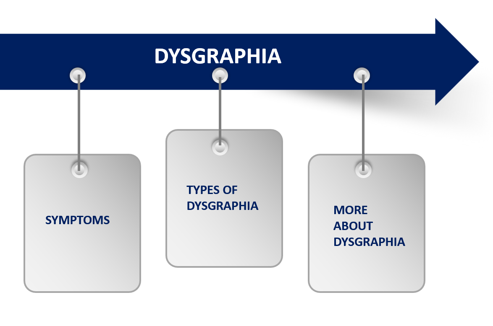
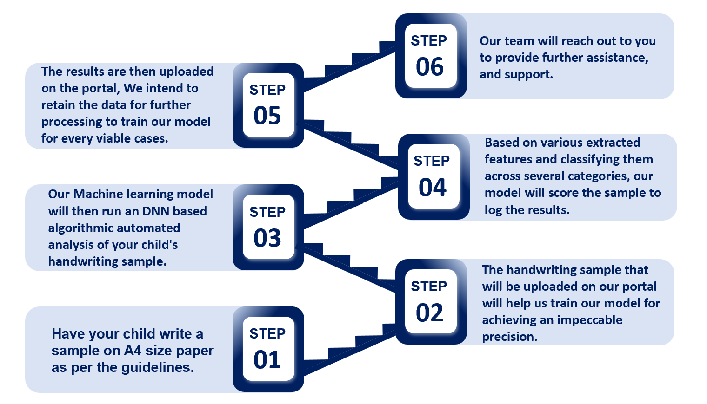

SYMPTOMS
Dysgraphia is a learning disability that primarily affects a person's ability to write coherently
and legibly. While the specific symptoms can vary from person to person.
Dysgraphia is commonly categorized into three broad categories based on the predominant features:
Handwriting Difficulties:
Category involves challenges related to the physical act of writing.
Spelling and Grammar Challenges:
This category focuses on difficulties related to spelling and grammar skills, which can impact the overall quality and coherence of written work.
Expressive Writing Issues:
This category refers to difficulties in generating and organizing thoughts to compose written text.

TYPES OF DYSGRAPHIA

EASY,SWIFT AND RELIABLE
